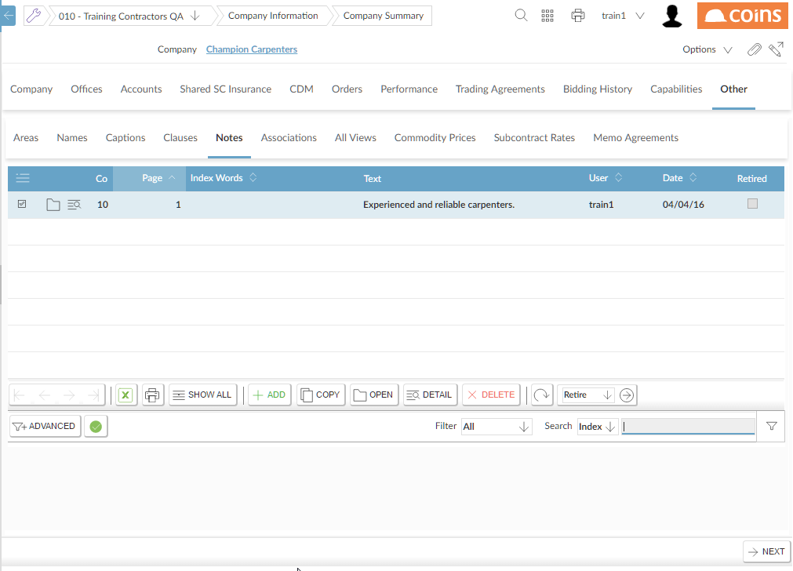
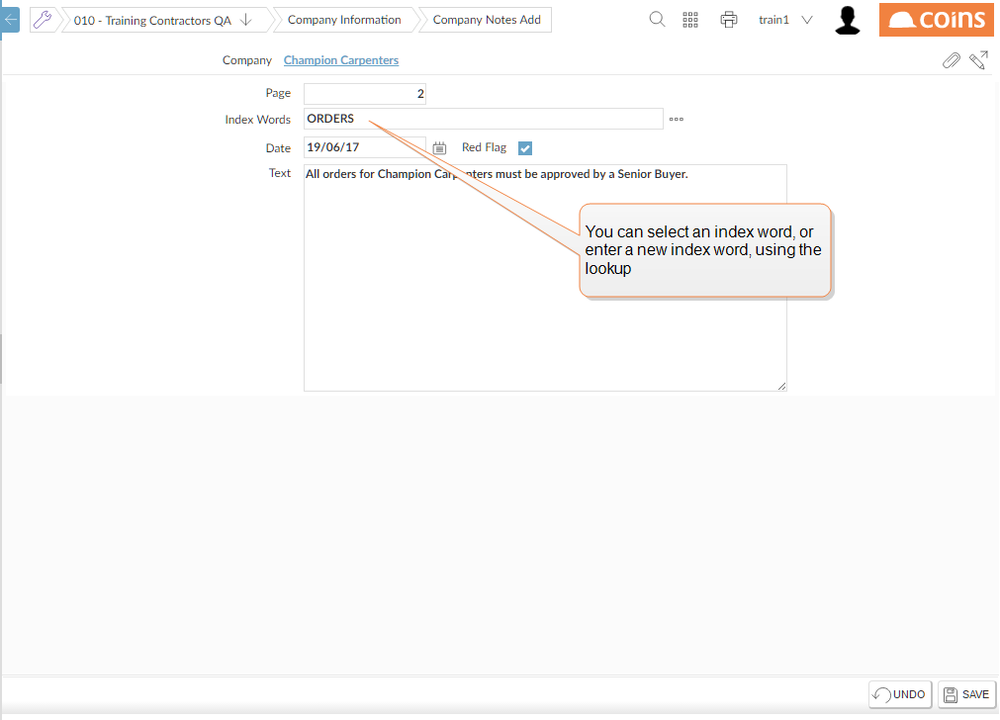

To add a note to a company:
- Go to Companies (or SRM Workbench).
- Click the link in the Name column for the company you want to add the note to.
-
Select the Other tab on the top layer of tabs, and then the Notes tab on the 2nd layer.

- Click
 to add a new note.
to add a new note.
-
You can select an existing Index Word using the lookup, or can enter a new one.

- To make the note a "red flag" note,
To read the notes against a company:
Either:
- Open the Company Summary and display the Notes tab.
- From the Company browse, click the flag image
 on the company line.
on the company line.